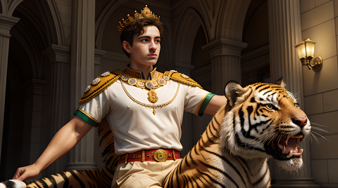

Emperor Rassi
How Rassi overcame the Greeks
Leader of the people
Rassi is known as the greatest army leader in history. He led the Greek war for a hundred thousand years. He fought all the people that faced him
. He wanted to ride tigers because tigers are very cool.
He played a lot of subway surfaces while riding his tiger. He liked eating cooked rice and chicken.
The passing of Rassi
After conquering Mexico, he went on to visit Peru. But he was too annoying for the people of Peru, so they drove him out. For some years he was seen as immortal
but he died in the year 0 when he fought the great warrior Feli. This was the last annyone saw of Rassi.